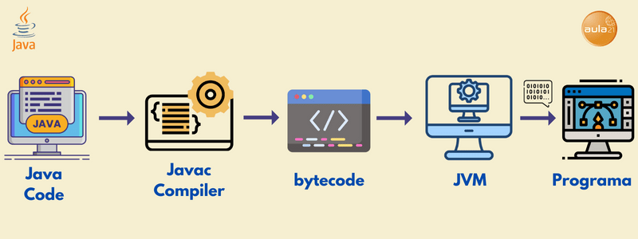

Java es un lenguaje de programación ampliamente utilizado para codificar aplicaciones web. Ha sido una opción popular entre los desarrolladores durante más de dos décadas, con millones de aplicaciones Java en uso en la actualidad. Java es un lenguaje multiplataforma, orientado a objetos y centrado en la red que se puede utilizar como una plataforma en sí mismo. Es un lenguaje de programación rápido, seguro y confiable para codificarlo todo, desde aplicaciones móviles y software empresarial hasta aplicaciones de macrodatos y tecnologías del servidor.
Los lenguajes informáticos de alto nivel son más fáciles de leer, escribir y corregir, pero sin duda debe haber un compilador entre el lenguaje de programación y la máquina del ordenador que compile o interprete el código para que pueda ejecutarse en un lenguaje que el ordenador entienda. Java es un lenguaje portable que se puede ejecutar en cualquier sistema operativo. El código escrito en Java se compila en un formato especial llamado bytecode, que luego se ejecuta en la máquina virtual Java (JVM). Esto significa que el código Java se puede ejecutar en cualquier plataforma que tenga una JVM instalada, lo que lo hace independiente del sistema operativo. El programa Java consta de uno o varios archivos de código fuente con extensión .java que contienen las instrucciones escritas en el lenguaje Java. Estos archivos se compilan utilizando el compilador javac, generando archivos con extensión .class que contienen el bytecode. Estos archivos de bytecode se pueden ejecutar en cualquier plataforma con una JVM instalada. En resumen, Java es un lenguaje de programación que se compila en bytecode y se ejecuta en una máquina virtual, lo que permite que el código se ejecute en cualquier plataforma con una JVM instalada, y ofrece un gran conjunto de bibliotecas estándar para facilitar el desarrollo de aplicaciones.
